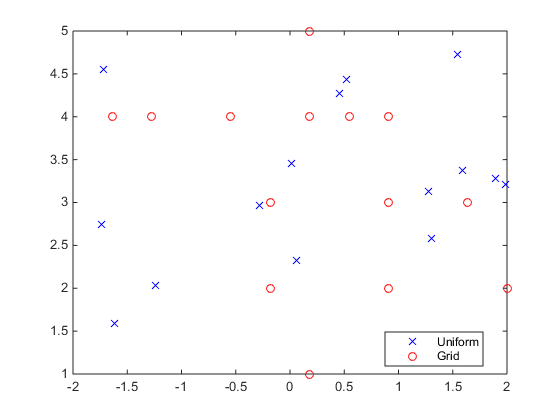
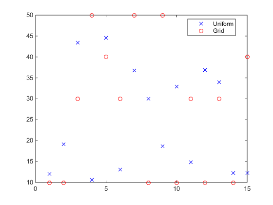
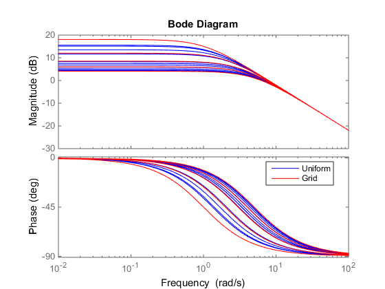

LPVSAMPLE - Sample a LPV object
Contents
Syntax
S=lpvsample(G,N) S=lpvsample(G,N,OPT)
Description
If R is an rgrid, then S=LPVSAMPLE(R,N) returns a sample of N points from the rectangular grid R. S is an Niv-by-N matrix with each column containing one sample of the rectangular grid. The rows of S correspond to the ordering of independent variables in R.IVName.
Otherwise, if G is a pmat, pss, pfrd, upmat, upss or upfrd, then S=lpvsample(G,N) returns N samples of the LPV object G. Each sample of G is generated by evaluating G at a randomly chosen point in the domain of G. The output S is an array of size: [ size(G), N ].
S=lpvsample(G,N,OPT) allows the user to specify the sampling algorithm to be used. OPT is a char that specifies the type of sampling: * 'grid': Draws points drawn randomly (possibly with repeats) from the rectangular grid of G.Domain. * 'uniform' (default): Draws points uniformly from the hypercube specified by the limits of G.Domain. * 'LHC': Does a Latin Hypercube sample of the G.Domain.
For 'uniform' and 'LHC', the samples are not, in general, elements of the rectangular grid.
Example: Sample a 2-dimensional rgrid object
R = rgrid( {'a', 'b'}, {linspace(-2,2,12), 1:5} );
Su = lpvsample(R,15); % Uniform sample
Sg = lpvsample(R,15,'grid'); % Sample from grid
plot(Su(1,:),Su(2,:),'bx',Sg(1,:),Sg(2,:),'ro');
legend('Uniform','Grid','Location','Best')
 Example: Sample a 2-by-2 pmat object
a = pgrid('a',1:5); M = 10*a; Su = lpvsample(M,15); % Uniform sample Sg = lpvsample(M,15,'grid'); % Sample from grid plot(1:15,Su(:),'bx',1:15,Sg(:),'ro') legend('Uniform','Grid','Location','Best')
Example: Sample a 1-by-1 pss object
a = pgrid('a',1:5); M = ss(-a,2,4,0); Su = lpvsample(M,15); % Uniform sample Sg = lpvsample(M,15,'grid'); % Sample from grid bode(Su,'b',Sg,'r') legend('Uniform','Grid','Location','Best')